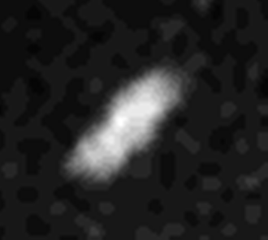

Naiad (moon)
 Naiad as seen by Voyager 2 (elongation is due to smearing) | |
| Discovery | |
|---|---|
| Discovered by | Voyager Imaging Team |
| Discovery date | September 1989 |
| Designations | |
Designation | Neptune III |
| Pronunciation | /ˈneɪəd/ or /ˈnaɪæd/,[1][2] /ˈneɪəd/ or /ˈnaɪəd/[3] |
Named after | pl. Ναϊάδες Nāïades |
| Adjectives | Naiadian /-ˈædiən/[4] |
| Orbital characteristics[5][6] | |
| Epoch 18 August 1989 | |
| 48 224.41 km | |
| Eccentricity | 0.0047 ± 0.0018 |
| 0.2943958 ± 0.0000002 d | |
| Inclination |
|
| Satellite of | Neptune |
| Physical characteristics | |
| Dimensions | (96±8) × (60±16) × (52±8) km[7] |
| 33±3 km[7] | |
| Mass | ~1.2×1017 kg (calculated) |
Mean density | 0.80±0.48 g/cm3[8] |
| synchronous | |
| zero | |
| Albedo | 0.072[7][9] |
| Temperature | ~51 K mean (estimate) |
| 23.91[9] | |
Naiad /ˈneɪəd/, (also known as Neptune III and previously designated as S/1989 N 6) named after the naiads of Greek legend,[10] is the innermost satellite of Neptune and the nearest to the center of any gas giant with moons with a distance of 48,224 km from the planet's center. Its orbital period is less than a Neptunian day, resulting in tidal dissipation that will cause its orbit to decay. Eventually it will either crash into Neptune's atmosphere or break up to become a new ring.[11]
History
[edit]
Naiad was discovered sometime before mid-September 1989 from the images taken by the Voyager 2 probe. The last moon to be discovered during the flyby, it was designated S/1989 N 6.[12] The discovery was announced on 29 September 1989, in the IAU Circular No. 4867, and mentions "25 frames taken over 11 days", implying a discovery date of sometime before 18 September. The name was given on 16 September 1991.[13]
Physical characteristics
[edit]Naiad is irregularly shaped. It is likely that it is a rubble pile re-accreted from fragments of Neptune's original satellites, which were smashed up by perturbations from Triton soon after that moon's capture into a very eccentric initial orbit.[14]
Orbit
[edit]
Naiad is in a 73:69 orbital resonance with the next outward moon, Thalassa, in a "dance of avoidance". As it orbits Neptune, the more inclined Naiad successively passes Thalassa twice from above and then twice from below, in a cycle that repeats every ~21.5 Earth days. The two moons are about 3540 km apart when they pass each other. Although their orbital radii differ by only 1850 km, Naiad swings ~2800 km above or below Thalassa's orbital plane at closest approach. Thus this resonance, like many such orbital correlations, serves to stabilize the orbits by maximizing separation at conjunction. However, the role of orbital inclination in maintaining this avoidance in a case where eccentricities are minimal is unusual.[15][8]
Exploration
[edit]Since the Voyager 2 flyby, the Neptune system has been extensively studied from ground-based observatories and the Hubble Space Telescope as well. In 2002–03 the Keck telescope observed the system using adaptive optics and detected easily the largest four inner satellites. Thalassa was found with some image processing, but Naiad was not located.[16] Hubble has the ability to detect all the known satellites and possible new satellites even dimmer than those found by Voyager 2. On 8 October 2013 the SETI Institute announced that Naiad had been located in archived Hubble imagery from 2004.[17] The suspicion that the loss of positioning was due to considerable errors in Naiad's ephemeris[18] proved correct as Naiad was ultimately located 80 degrees from its expected position.
References
[edit]- ^ Noah Webster (1884) A Practical Dictionary of the English Language
- ^ "naiad". Oxford English Dictionary (Online ed.). Oxford University Press. (Subscription or participating institution membership required.)
- ^ "naiad". Merriam-Webster.com Dictionary. Merriam-Webster.
- ^ Morris (1904) British violin-makers
- ^ Jacobson, R. A.; Owen, W. M. Jr. (2004). "The orbits of the inner Neptunian satellites from Voyager, Earthbased, and Hubble Space Telescope observations". Astronomical Journal. 128 (3): 1412–1417. Bibcode:2004AJ....128.1412J. doi:10.1086/423037.
- ^ Showalter, M. R.; de Pater, I.; Lissauer, J. J.; French, R. S. (2019). "The seventh inner moon of Neptune" (PDF). Nature. 566 (7744): 350–353. Bibcode:2019Natur.566..350S. doi:10.1038/s41586-019-0909-9. PMC 6424524. PMID 30787452.
- ^ a b c Karkoschka, E. (2003). "Sizes, shapes, and albedos of the inner satellites of Neptune". Icarus. 162 (2): 400–407. Bibcode:2003Icar..162..400K. doi:10.1016/S0019-1035(03)00002-2.
- ^ a b Brozović, M.; Showalter, M. R.; Jacobson, R. A.; French, R. S.; Lissauer, J. J.; de Pater, I. (October 31, 2019). "Orbits and resonances of the regular moons of Neptune". Icarus. 338 (2): 113462. arXiv:1910.13612. Bibcode:2020Icar..33813462B. doi:10.1016/j.icarus.2019.113462. S2CID 204960799.
- ^ a b "Planetary Satellite Physical Parameters". JPL (Solar System Dynamics). 2008-10-24. Retrieved November 15, 2019.
- ^ "Planet and Satellite Names and Discoverers". Gazetteer of Planetary Nomenclature. USGS Astrogeology. July 21, 2006. Retrieved 2006-08-05.
- ^ "Naiad". NASA Science Solar System Exploration. NASA.
- ^ Green, D. W. E. (September 29, 1989). "Neptune". IAU Circular. 4867. Retrieved 2011-10-26.
- ^ Marsden, B. G. (September 16, 1991). "Satellites of Saturn and Neptune". IAU Circular. 5347. Retrieved 2011-10-26.
- ^ Banfield, D.; Murray, N. (October 1992). "A dynamical history of the inner Neptunian satellites". Icarus. 99 (2): 390–401. Bibcode:1992Icar...99..390B. doi:10.1016/0019-1035(92)90155-Z.
- ^ "NASA Finds Neptune Moons Locked in 'Dance of Avoidance'". Jet Propulsion Laboratory. November 14, 2019. Retrieved November 15, 2019.
- ^ Marchis, F.; Urata, R.; de Pater, I.; Gibbard, S.; Hammel, H. B.; Berthier, J. (May 2004). "Neptunian Satellites observed with Keck AO system". American Astronomical Society, DDA meeting #35, #07.08; Bulletin of the American Astronomical Society. Vol. 36. p. 860. Bibcode:2004DDA....35.0708M.
- ^ "Lost Neptune Moon Re-Discovered". Retrieved 9 October 2013.
- ^ Showalter, M. R.; Lissauer, J. J.; de Pater, I. (August 2005). "The Rings of Neptune and Uranus in the Hubble Space Telescope". American Astronomical Society, DPS meeting #37, #66.09; Bulletin of the American Astronomical Society. Vol. 37. p. 772. Bibcode:2005DPS....37.6609S.
External links
[edit]- Naiad Profile by NASA's Solar System Exploration
- Neptune's Known Satellites (by Scott S. Sheppard)
- Archival Hubble Images Reveal Neptune's "Lost" Inner Moon (SETI : October 8, 2013)
- Neptune Moon Dance (animation) on YouTube from NASA Jet Propulsion Laboratory
Listed in approximately increasing distance from Neptune | |||||||||||
| Regular (inner) | |||||||||||
| Irregular |
| ||||||||||
| See also | |||||||||||
Natural satellites of the Solar System | ||
|---|---|---|
| Planetary satellites of |   | |
| Dwarf planet satellites of | ||
| Minor-planet moons | ||
| Ranked by size | ||
| Geography |  | ||||||
|---|---|---|---|---|---|---|---|
| Moons | |||||||
| Astronomy |
| ||||||
| Exploration |
| ||||||
| Related | |||||||